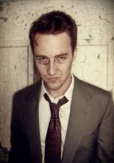

PERSONAJES PRINCIPALES DE LA PELÍCULA
| NOMBRE | DESCRIPCIÓN | IMAGEN |
|---|
| Marla Singer |
Marla Singer. Esta es interpretada por Helen Bonham Carter. Este personaje se basa en una mujer que debido a su soledad y sus distintos ámbitos perturbadores asiste un grupo de apoyo en el cual conoce a nuestro personaje principal y juntos asisten a dichos grupos para así llenar su vacío. Finalmente salen y él busca alejarla por múltiples razones; en la que una de ellas Marla intenta un suicidio que finalmente es fallido. Fuente: https://es.wikipedia.org/wiki/Fight_Club |
|
| NOMBRE | DESCRIPCIÓN | IMAGEN |
|---|
| Tyler Durden |
Tyler Durden es interpretado por Brad Pitt. Este personaje resulta ser un fabricante de jabones y proyeccionista de cine. Este, en el transcurso de la película, muestra simultaneamente su desprecio al sistema social y financiero. Tyler fue el fundador del club de la pelea y líder del Caos que se desato poco a poco; más sin embargo, al final de la película, se revela que Tyler es simplemente la otra personalidad del narrador que basicamente cumplia sus verdaderas expectativas. Fuente: https://es.wikipedia.org/wiki/Fight_Club |
|
| NOMBRE | DESCRIPCIÓN | IMAGEN |
|---|
| Narrador (personaje principal) |
Este es interpretado por Edward Norton. Realmente nunca se revela su nombre en el transcurso de la película. Es un personaje bastante comun; pues solo se basaba en su trabajo para conseguir bienes materiales inutiles; pues el cansancio y el insomnio lo llevan a distintos sucesos en los que conoce a Marla y Tyler. Fuente: https://es.wikipedia.org/wiki/Fight_Club |
 |